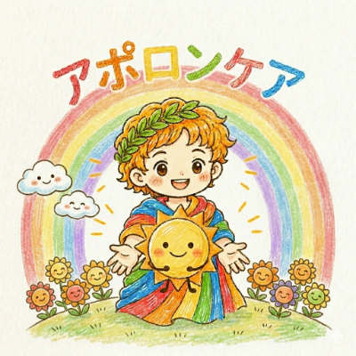
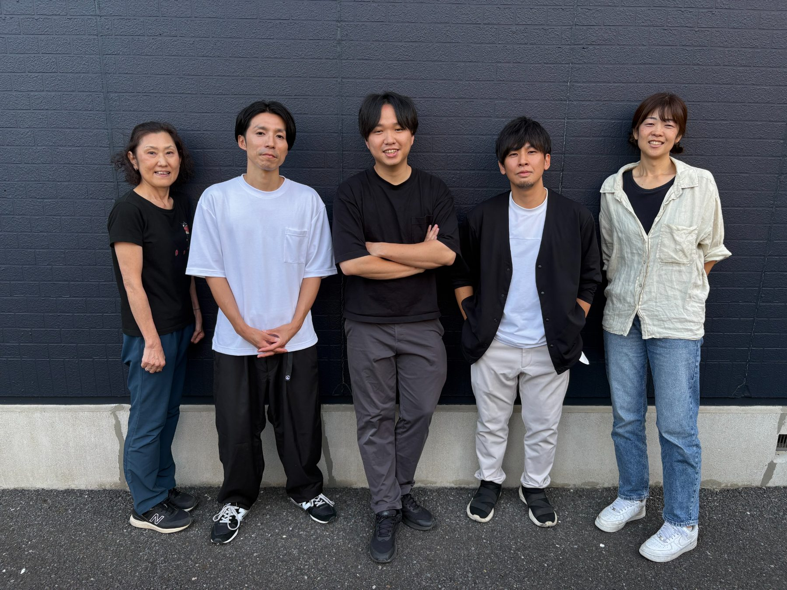
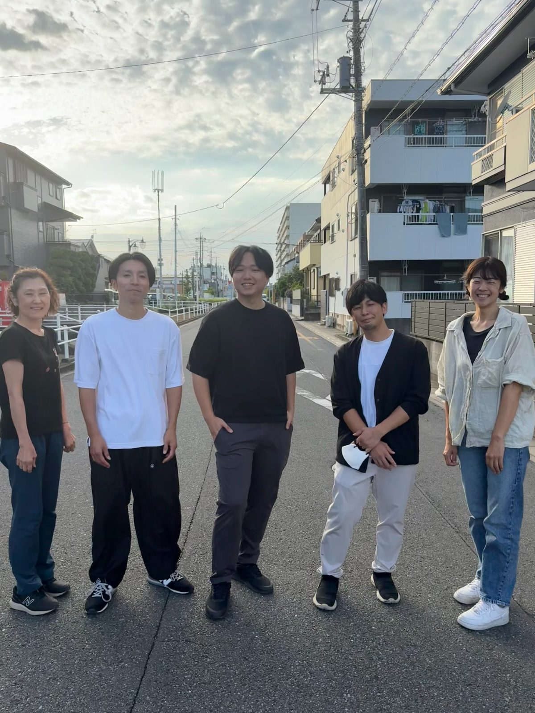

地域に
小さな太陽を。
人生の最期まで、「自宅で暮らしたい」を選べる地域へ。
訪問介護から始め、3年かけて365日24時間を支える地域拠点へ。
社会に必要とされ、事業としても続けられる介護経営を。

※黒字化・応募数は直営実績です。初期投資・ロイヤリティは加盟条件、営業利益は一定条件によるシミュレーションであり、成果・収益を保証するものではありません。

机上の計画ではなく、
直営でやってきた形を、そのまま渡します。
本部の直営3店舗はすべて黒字で、開業時の投資も回収済みです。2026年10月には吉川市で4店舗目を開設し、訪問介護と定期巡回の組み合わせを始めました。11月には上尾市で訪問介護を開始し、5店舗体制になる予定です。採用・営業・請求・教育まで、実際に回している運営の型を、加盟店にそのままお渡しします。
介護は、24時間365日必要です。
いつ介護が必要になるかは、選べません。一日の中でも、急に人の手が必要になる瞬間は何度も訪れます。
{{ d.body }}
だから、必要なのが──
365日24時間、地域を支える介護。
これは、机上の空論ではありません。
在宅介護をめぐる3つの構造的な事実が、この事業の必要性を示しています。
{{ m.title }}
{{ m.num }}{{ m.unit }}
{{ m.cap }}{{ m.body }}
※内閣府「高齢社会白書」、厚生労働省公表資料、東京商工リサーチ調査等をもとに本部作成。加盟資料に掲載の市場環境と併せてご覧ください。
国は施設中心から在宅中心の支援へ方針を移しており、訪問介護は地域包括ケアの中核を担うサービスとして位置づけられています。
利用者・家族・ケアマネジャー・行政・医療機関と連携しながら、地域に根を張って運営する事業です。
売上の多くは公的制度に基づく給付で構成され、一般消費型ビジネスと比較して景気変動の影響を受けにくい構造です。※制度改定・人件費高騰・採用環境の変化等への対応は必要です。
需要はある。でも、届けられるリソースが足りない。
足りていないものを、地域に一つずつ増やしていく。
それが、この事業の在り方そのものです。
訪問介護から始め、3年かけて
365日24時間を支える地域拠点へ。
アポロンケアは、単純な訪問介護FCではありません。訪問介護で地域の基盤をつくり、採用・営業・請求・組織を安定させたうえで、定期巡回・随時対応型訪問介護看護を段階的に組み込みます。
 思想
思想
人生の最期の選択肢を、地域資源が足りないという理由で狭めない。

経営社会性だけで終わらせず、事業として続く仕組みをつくる。
アポロンケアが選ばれる、3つの理由。
REASON 01
机上の空論ゼロ。
直営で検証したモデル。
直営店を実際に運営している本部です。「こうすれば上手くいくはず」ではなく、実際の介護現場で試したものだけをFC化しています。代表自身は介護業界経験12年。定期巡回事業を0から2店舗立ち上げ、両店を黒字化し、公募・指定から夜勤、収支管理まで3年間の実務経験があります。現場を知る本部が伴走します。
3店舗 すべて黒字・投資回収済み
月15〜20件
※媒体・地域・時期により変動します。
REASON 02
訪問介護最大の壁
「採用」をサポート。
訪問介護は需要はありますが、働く人が集まらなければ売上を作れません。直営では月15〜20件程度の応募を継続獲得する仕組みを構築。求人広告を出すだけでなく、応募から面接・採用・定着までをサポートします。
REASON 03
訪問介護だけで終わらない。
3年間の「統合運営モデル」。
いきなり24時間事業を始めるのではありません。まず訪問介護を立ち上げ、採用・営業・地域連携・請求・組織運営を安定させる。その上で地域・自治体の状況を確認しながら、定期巡回・随時対応型訪問介護看護を組み込みます。同じ地域、同じ拠点、可能な範囲で同じ人材資源へ、定期巡回機能を追加していきます。
介護保険 × 障害福祉 × 自費。
3つの収益源で訪問介護の基盤をつくる。
定期巡回を組み込む前に、訪問介護事業所として3本の収益源を立てます。別事業を立ち上げるのではなく、同じ職員・同じ事務所・同じ地域基盤で育てる統合運営モデルです。
{{ i.body }}
- ☀{{ ii }}
この3つで職員・営業・請求の基盤をつくり、その同じ拠点に定期巡回を組み込みます。
3年間の成長ロードマップ。
{{ active.title }}
{{ active.body }}
{{ active.kpi }}万円
※70万円／73.5万円／77万円はいずれもモデル値であり、実績を保証するものではありません。
3年間の収支モデル。
常勤換算5名程度を想定した、一定条件でのシミュレーションです。
3年累計営業利益モデル
2,791万円
初期投資440万円（税別）に対して 約6.3倍 相当、11ヶ月目に累計回収というシミュレーション上の数値です。
累計営業利益の推移（万円）
年次ごとの売上・営業利益の内訳は、20ページの加盟資料に収支モデルとして掲載しています。
※これは一定条件による事業シミュレーションであり、売上・利益・投資回収等を保証するものではありません。地域、採用、人員配置、利用者数、加算取得状況その他の条件により結果は変動します。
施設も、在庫もいらない。
アセットライト型の介護経営。
訪問介護は、大型施設や商品在庫などを必要としにくい事業です。ただし物件条件、地域、採用状況、車両、設備などにより、実際に必要となる資金は変わります。
初期投資モデル
440万円（税別）
指定申請・開設支援は本部支援内で完結するモデルです。※物件条件、地域、採用状況、備品内容、開設準備の進捗等により実際の初期費用は変動します。
ロイヤリティ／定期巡回の追加条件
5%
総売上に対するロイヤリティ
※定期巡回開始に必要となる人件費、車両、通信、夜勤体制その他の通常事業経費は別途発生します。
開業して終わりにしません。
3年間、一緒に経営します。
訪問介護と定期巡回を分けず、3年間を一つの事業成長として支援します。
{{ s.body }}
加盟契約から開業まで、目安6ヶ月。
{{ st.body }}
その後、1年半頃を一つの目安として、定期巡回の追加を進めます。
※地域、採用、指定申請、物件等により期間は変動します。
「どこでも必ず定期巡回ができる」
わけではありません。
都合のいいことだけを言いません。定期巡回は、好きな地域で自由に開設できるサービスではありません。自治体ごとに、整備方針・公募時期・公募枠・既存事業所数・地域ニーズなどが異なります。だからアポロンケアでは、加盟前に本部が地域ごとの可能性を調べます。
リスクを隠さず、
現場が崩れない経営を。
良いことだけを並べるフランチャイズにはしません。
起こりうることと、その備えを先に共有します。
売上だけを追わない。
現場を崩さず、長く続く事業をつくる。
こんな経営者・法人に向いています。
{{ t.title }}
{{ t.quote }}
- ☀{{ ti }}
子供の頃にもらった希望を、
今度は自分が届ける側に。
代表・大西晃志は、幼少期に母親が不在がちな家庭環境で育ちました。
それでも将来に希望を持つことができたのは、周囲の大人たちが温かく関わってくれたからです。
その想いが、株式会社solmano、そしてアポロンケアの原点です。私たちが目指しているのは、単に訪問介護事業所の数を増やすことではありません。
地域に、安心して頼れる大人と、
介護のインフラを増やすこと。
介護現場から事業を立ち上げ、現在も介護事業の経営・拡大に取り組んでいます。
SOCIALITY × BUSINESS
社会性 × 事業性
志だけでは続きません。事業として成立するからこそ、地域に残せる。この両立が、アポロンケアです。
よくあるご質問。
あなたの地域に小さな太陽を。
まずは、ご自身の地域の数字を見てみませんか。ご相談はすべて無料です。
※本ページ内の収支・投資に関する数値は一定条件によるシミュレーションであり、成果・収益を保証するものではありません。